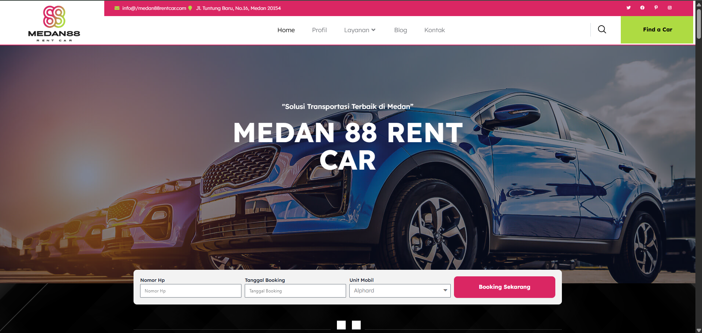
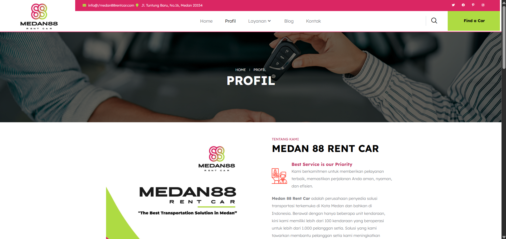
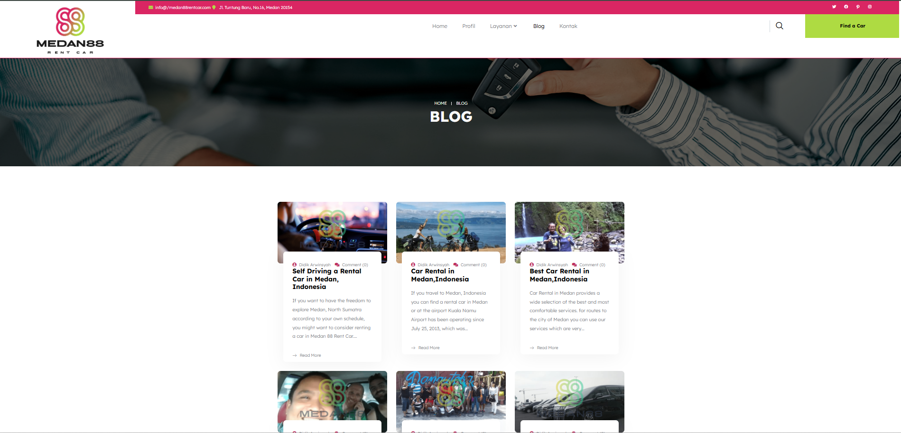
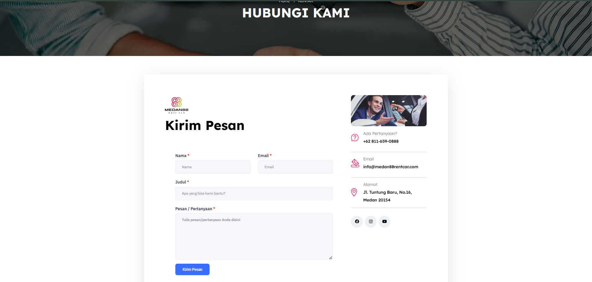

Penjamin Kualitas Perangkat Lunak
| Nama | Laskar Eltriman Gulo |
| NIM | 223303030635 |
| Jurusan | Teknik Informatika |
| Semester | 7 (Tujuh) |
| Mata Kuliah | Penjamin Kualitas Perangkat Lunak |
| Dosen | Achmad Ridwan, S.T., M.Si. |
| Website | https://medan88rentcar.com/ |
A. Sistem / Website Rental Mobil (medan88rentcar.com)
1. Tampilan Sistem / Website

Home
Beranda utama: menampilkan daftar mobil, promo, dan tombol booking.
Beranda utama: menampilkan daftar mobil, promo, dan tombol booking.

Profil
Informasi perusahaan, sejarah, alamat, dan jam operasional.
Informasi perusahaan, sejarah, alamat, dan jam operasional.
 Layanan
LayananJenis layanan: sewa harian, mingguan, dengan / tanpa supir.

Blog
Artikel seputar tips berkendara, promo, dan panduan pemesanan.
Artikel seputar tips berkendara, promo, dan panduan pemesanan.

Kontak
Formulir kontak, nomor WhatsApp, dan lokasi via Google Maps.
Formulir kontak, nomor WhatsApp, dan lokasi via Google Maps.
2. Siklus Pengembangan Website Rental Mobil
| Siklus | Aktivitas | Dokumen |
|---|---|---|
| Perencanaan | - Identifikasi kebutuhan sistem (tujuan: membuat website rental mobil online) - Menentukan fitur utama: daftar mobil, detail, pemesanan, pembayaran, testimoni - Menentukan platform (WordPress, PHP, Laravel, atau Flutter Web) |
- Dokumen Analisis Kebutuhan (SRS) - Rencana Proyek - Sketsa awal UI/UX |
| Analisis Sistem | - Analisis proses bisnis rental manual ke digital - Menentukan alur proses (pencarian, booking, pembayaran, pengembalian) - Menentukan entitas database (mobil, pelanggan, transaksi) |
- Data Flow Diagram (DFD) - Entity Relationship Diagram (ERD) - Spesifikasi Database |
| Desain Sistem | - Mendesain tampilan UI (beranda, daftar mobil, form booking) - Mendesain arsitektur backend (struktur folder, API endpoint, tabel database) - Mendesain navigasi dan alur UX |
- Wireframe / Mockup - Desain UI (Figma / Canva / Adobe XD) - Database Schema (MySQL) |
| Pengembangan | - Membuat database MySQL - Membuat halaman web (HTML, CSS, JS, PHP/Laravel) - Menambahkan form booking & integrasi WhatsApp API - Implementasi admin panel untuk kelola data mobil & pemesanan |
- Kode sumber (Source Code) - Struktur Database - File konfigurasi server |
| Pengujian | - Uji fungsional: form booking, tampilan detail mobil, pesan ke admin - Uji keamanan (SQL injection, validasi input) - Uji kompatibilitas di berbagai perangkat |
- Laporan Hasil Uji (Test Report) - Daftar Bug & Perbaikan |
| Implementasi / Deployment | - Upload file website ke hosting - Menghubungkan domain resmi - Integrasi email admin & WhatsApp bisnis |
- Hosting & Domain aktif - Konfigurasi server (cPanel / FTP) - Deployment Guide |
| Operasional | - Website aktif digunakan publik - Admin menerima pemesanan online - Sistem menyimpan transaksi nyata |
- Data transaksi pelanggan - Laporan order & keuangan |
| Pemeliharaan | - Mengecek kinerja server & database - Memperbaiki bug pasca-live - Update fitur baru (login, e-wallet, otomatisasi pembayaran) |
- Log Maintenance - Versi baru sistem (Changelog) - Backup Database |
| Evaluasi & Pengembangan Lanjutan | - Analisis statistik pengguna & review pelanggan - Laporan kinerja untuk pengembangan fitur lanjutan (contoh: aplikasi mobile) |
- Laporan Evaluasi - Rencana Pengembangan Lanjutan |